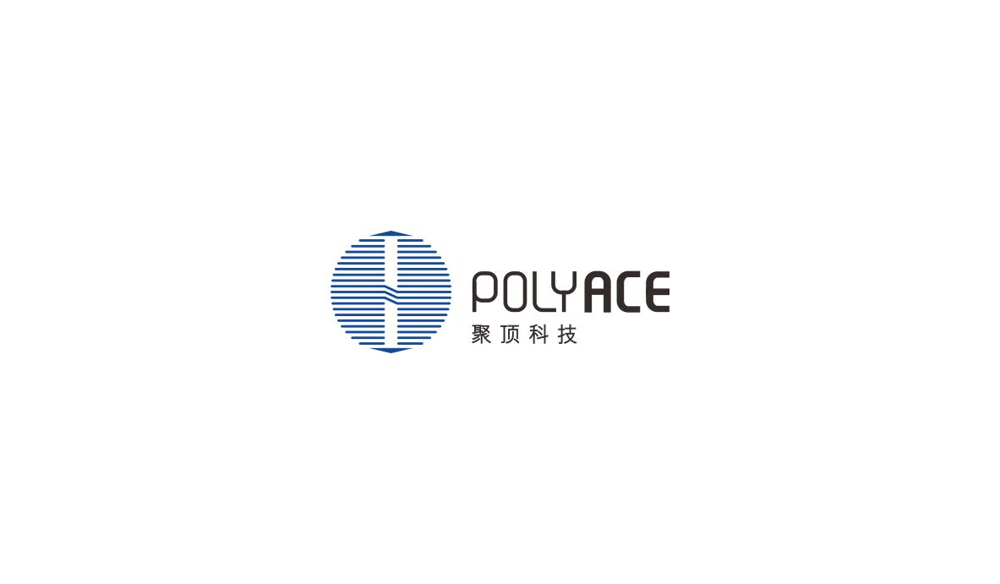
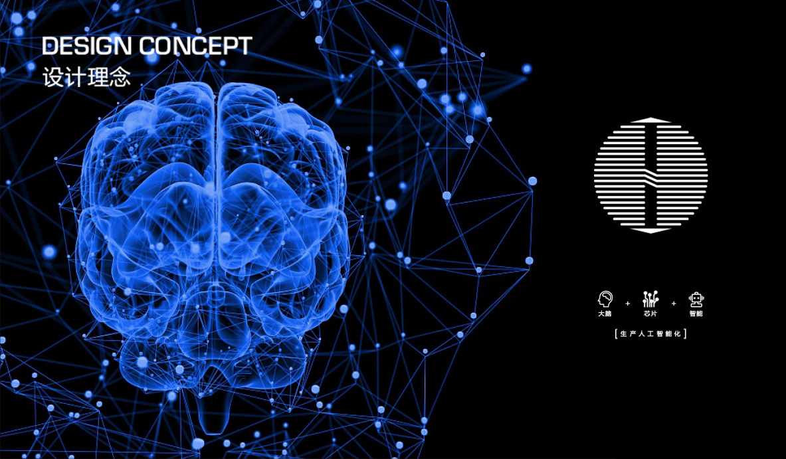
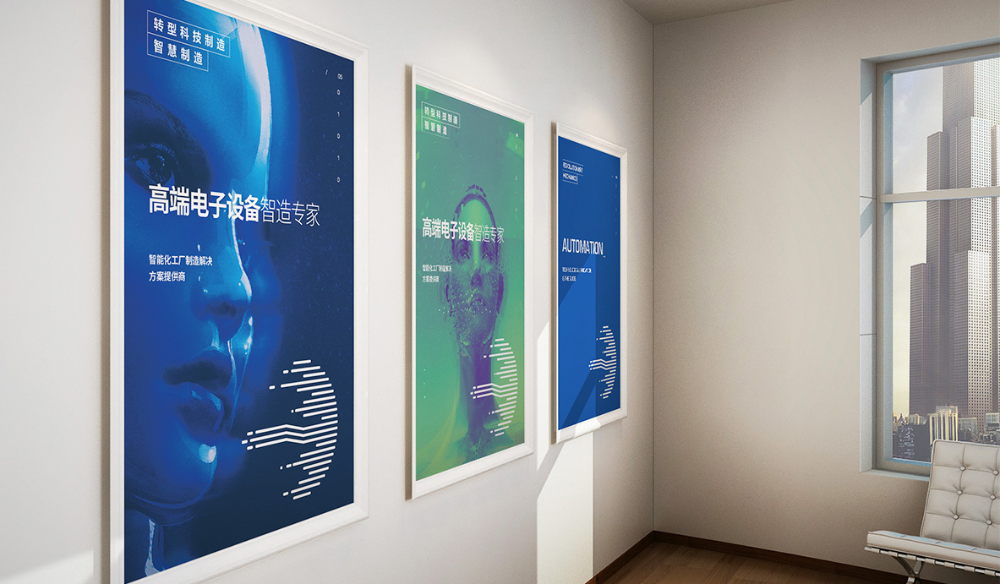

从海右博纳多年的品牌设计经验来看，企业logo是吸引人的注意力的最关键因素，为什么这么说呢？例如服装品牌，过去需要花几十年来培养自己的审美体系，凭借设计风格来凸显特点让人们辨认。但现在，「快速」的方法是在白色T恤上直接印制Logo。于是，曾被隐藏了几年的Logo时代又回来了。不止在服装品牌，我们看到那些刷屏的网红店模式，视觉符号化也成为了运营「套路」中的必备项。

所以品牌Logo的设计思路基本围绕「容易看到、容易理解、容易记住」这三个重要指标。但这过程依然必须要顺应大环境下的审美潮流2016年，万事达卡(MasterCard)公布了新的Logo设计。其主要改变发生在：将字母名称与图形分离，同时也将字样改成英文小写。此次高达800万的设计师费用用，引起了人们的注意。
其实早在1995年，Nike就去掉了Logo中的文字元素，原本的「Just Do It」不再出现。随后Apple、麦当劳、星巴克和其他品牌经过几次演变后，也去掉了Logo中的文字部分。而星巴克则在 2011 年的新Logo中正式去掉了「Starbucks Coffee」字样。时任行政总裁Howard Schultz 为此释义：我们正在做的，是让Starbucks 突破固有圈子，超越咖啡领域。万事达卡在修改Logo之后，其首席市场推广及传讯总监曾说：如此的设计含义，也是希望强调MasterCard 不再只是卡类产品。这显示了无文字Logo盛行的一个原因：隐去文字的固化解释，让人们对于品牌的涉及领域更充满期待和想象。
品牌们也正是在这样做的，越来越多跨界和尝试，让领域界限模糊，但也因此造就了更多的商业可能。

当然其中也有显而易见的原因，视觉的意向总是比语言更加容易理解。
同时，在互联网占据生活的今日，文字和口号显得太过冗长，简约的才更能令人一眼就记住。
如果谈及消费思维，结合消费者的认知和态度来看，去掉文字的Logo的做法，是“去品牌化的”方式。
去品牌化能令人们感到更多的亲切感，当然这是基于高知名度的品牌来说。
可口可乐曾经推出的“Share a Coke”的推广活动，以琅琅上口的歌词和人名代替印在汽水瓶身的Logo，营造“我们都是可口可乐”的亲切感，扭转了美国下跌了10 年的可口可乐销量。
哈佛商学院高级讲师Jill J. Avery的研究表明：
也就是说，能够带来更多个人化的想象和解读，就引起了注意。
根据一个专业的分析研究，我们了解了企业logo设计背后的一些思路，为什么无字的Logo更流行?也能从心理学中找到答案。
研究表明，当我们不熟悉的语言系统文字出现时，我们的大脑会将其全部图形化与符号化处理。
严格来讲，如果将文字的「实际表达含义」在与图形的「视觉形式美感」进行比较并不是严谨的。
但不可否认，图形从视觉上来看会更胜一筹。同时，在普遍审美中，抽象的图形总是比具象的文字更令人喜欢，目光停留时间更长。(超级英雄们的Logo)其最本质的原因就在于我们大脑的反应速度，反应速度越慢，我们会觉得图形越好看。
当我们仔细观察会发现，在全球的主流品牌中，欧美国家诞生的品牌的Logo会避免英文的直接使用。其目的是为了避免单词的含义被直接解读之后，造成的心理廉价感。

而往往，那些直接使用名称的Logo，虽是英文作为显示，但是却有一个共同点：他们的单词均为自组单词或自创单词。
人为创造出来的单词，不能在第一时间去解读字面含义，所以在心理活动时，依然是被当做图形或符号去理解。
同理，如果是用中文直接表达的Logo，如果不具备任何字面含义，在看到的第一眼时也不能直接理解，依然会被当作图形理解。
为品牌形象代言的媒介和生产技术已经发生了深刻改变，品牌们在利用更简洁的方式和世界沟通并展示自我。
企业logo设计Logo当然不只是一个印在产品上的好看符号，是去打开广阔传播市场的武器，更要经得起时间的长久考验。

济南海右博纳品牌营销咨询有限公司
Copyright 2001-2019 All Rights Reserved Sivibrand.
王伟品牌顾问微信